Hello! My name is Justin Weintraub, and this is my portfolio!
What you can find here is a collection of some of my projects as well as
information about me.
I'm a Software Engineer working full stack in the fields of Web
Development and AI. I'm also currently a student at Worcester
Polytechnic Institute.